Dopo l'alberghiero, il primo lavoro.
Un'app per iPhone e Android che mette in contatto chi esce dalla scuola con i locali della sua zona.
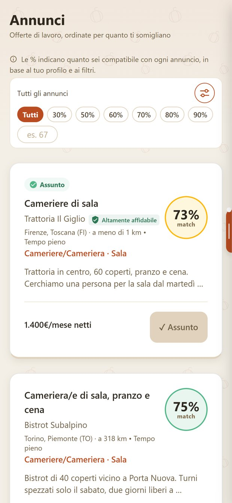
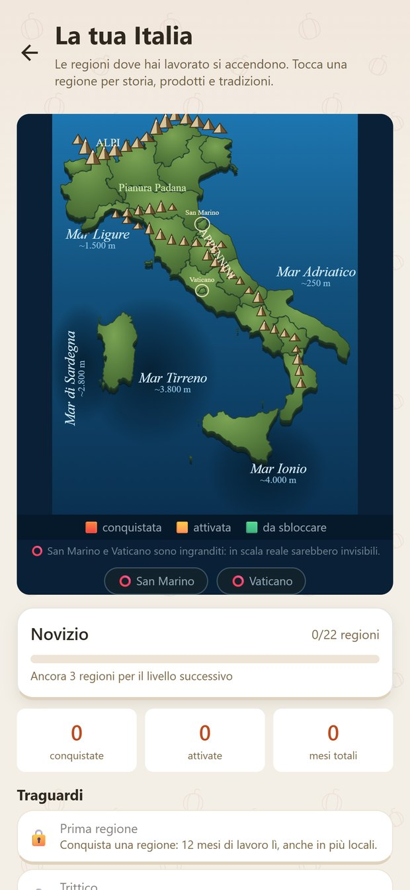
Per chi accompagna i ragazzi verso il lavoro.
È pensata per i docenti referenti di PCTO e orientamento, e per le quarte e le quinte.
RistoNext unisce camerieri, cuochi, baristi, receptionist e i locali che li cercano. Prima che si incontrino, calcola quanto sono compatibili.
Nelle pagine che seguono c'è ogni funzione che un ragazzo vede nell'app. Per ognuna: il problema che risolve oggi e cosa cambia col tempo, usandola.
I ruoli di ogni reparto si scelgono nell'app.
Alla fine trovate una proposta: un incontro in classe di 30 minuti.Michele Ricciardi, RistoNext
Tutta l'app, pagina per pagina.
Cosa trova oggi un diplomato.
- La paga "da definire".Si scopre al colloquio. A volte con la prima busta paga.
- L'extra che sparisce.Ti chiamano il venerdì per il sabato. Poi il sabato non serve più.
- Il curriculum senza risposta.Lo mandi e non sai se qualcuno l'ha letto.
- La scuola che non si vede.PCTO, laboratori, servizi di sala: sul foglio diventano una riga.
Gli annunci si guardano senza account.
Chi apre l'app vede gli annunci della zona prima di registrarsi. Un breve tutorial mostra com'è fatto un profilo.
Per candidarsi serve l'account. Si sceglie "professionista" o "locale". Poi si entra con l'impronta o col volto.
Oggi
Per vedere un'offerta spesso bisogna lasciare prima i propri dati.
Col tempo
Un ragazzo conosce il lavoro della sua zona già in quarta, prima del diploma.
Si guarda prima. Ci si iscrive quando si è pronti.
Quello che sai fare, scritto bene.
Ruolo, esperienze, foto, zona. C'è anche l'anteprima: il tuo CV come lo vede il locale.
Dal profilo si chiede un cambio di ruolo e si danno le dimissioni.
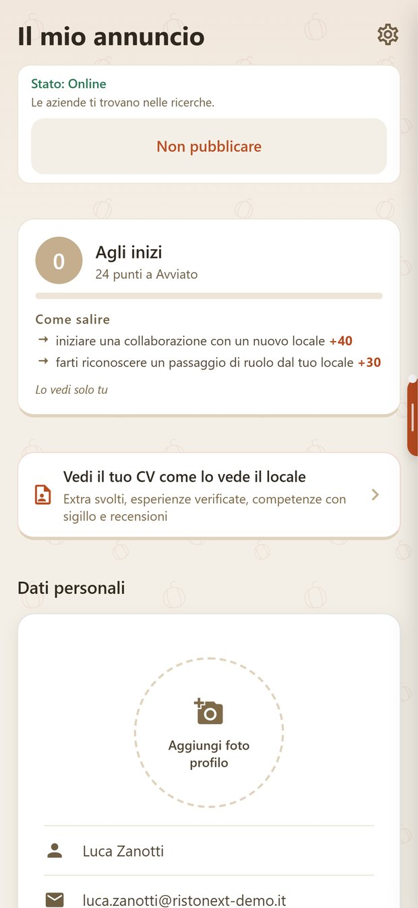
Oggi
Il CV di un diplomato è quasi vuoto. Quello che ha fatto a scuola non si vede.
Col tempo
Turni, extra e competenze verificate entrano nel profilo. Lo segue da un locale all'altro.
Il CV si carica in foto.
Si carica il curriculum in PDF o in foto. Il profilo si riempie da solo. Il ragazzo lo controlla prima di salvare.
L'import è a pagamento, una volta sola. Il profilo si compila anche a mano, gratis.
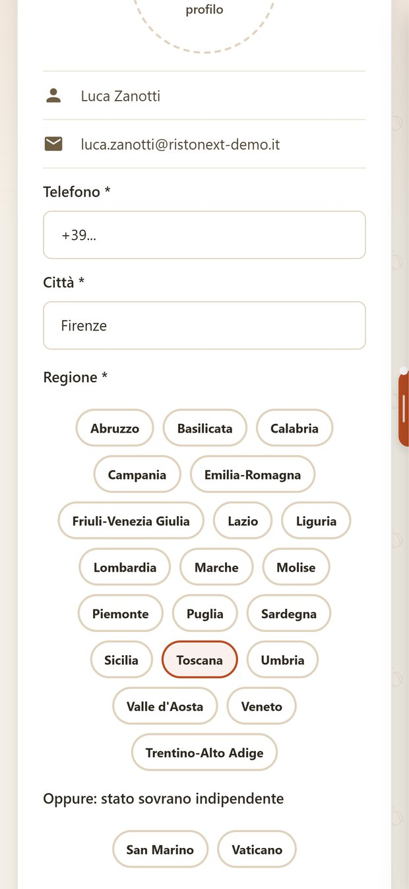
Oggi
Lo stesso CV si riscrive su ogni sito, ogni volta da capo.
Col tempo
Un curriculum solo, sempre aggiornato, pronto quando arriva l'occasione.
Il CV dice cosa è verificato.
Ogni voce del CV porta il suo sigillo: verificato sul campo, certificato, documentato.
Il locale legge il CV così, con i sigilli in vista.
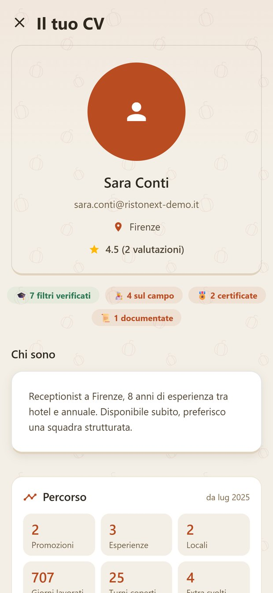
Oggi
Sul CV si può scrivere qualsiasi cosa. Il titolare non ha modo di controllare.
Col tempo
Un ragazzo serio si distingue. Quello che c'è scritto regge.
L'esperienza la conferma il datore di lavoro.
Ogni lavoro fatto con un locale su RistoNext entra nel CV: locale, ruolo, date.
Lo conferma il locale, non il ragazzo.
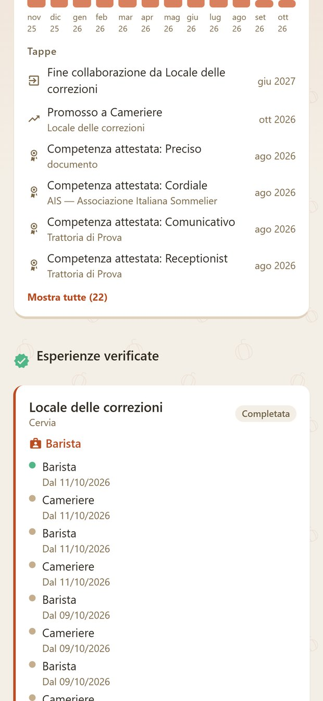
Oggi
Una stagione fatta bene, senza una lettera di referenze, sul CV pesa poco.
Col tempo
Ogni esperienza confermata è una referenza che il ragazzo si porta dietro.
Ogni annuncio dice quanto ti somiglia.
Le offerte arrivano in ordine di compatibilità. Su ognuna ci sono la percentuale e la paga.
Ci si candida con un tasto.
% di compatibilità · paga scrittaOggi
Si risponde a decine di annunci a caso, senza sapere se si è adatti.
Col tempo
Ogni candidatura ha più senso. Si capisce quali ruoli e quali zone ti somigliano.
Filtri veri, e gli annunci salvati.
Si cerca per regione, provincia, ruolo e area: sala, cucina, bar, ricevimento.
Gli annunci che interessano si salvano e si ritrovano in una lista.
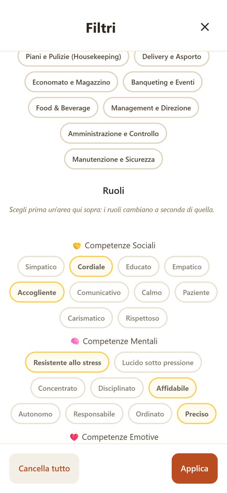
Oggi
Le offerte buone si perdono in mezzo agli annunci vecchi.
Col tempo
Si impara a cercare con criterio, come fa chi lavora da anni.
Tutto scritto, prima di candidarsi.
Orari, contratto, compenso, ruolo. Si legge prima, non al colloquio.
Dal dettaglio si scrive direttamente al locale.
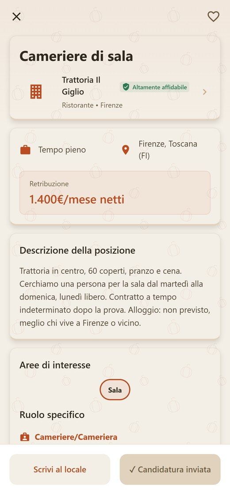
Oggi
Le condizioni si scoprono seduti davanti al titolare.
Col tempo
Si arriva al colloquio sapendo già cosa si è disposti ad accettare.
La paga si scrive. Sempre.
Un annuncio senza retribuzione non si pubblica. L'app lo blocca prima che esca.
È la regola che i ragazzi notano per prima.
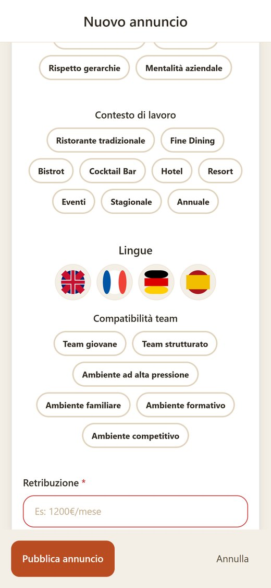
Oggi
Molti annunci del settore scrivono "retribuzione da definire".
Col tempo
Chi entra nel lavoro si abitua a confrontare le paghe. I locali seri si riconoscono subito.
Lavori stagionali e primi lavori.
Ogni annuncio dice il tipo di contratto. Chi cerca la stagione la trova accanto ai lavori in città.
Con i filtri per regione si guarda anche lontano da casa: il mare d'estate, la montagna d'inverno.
Oggi
La stagione si trova col passaparola. Chi non conosce nessuno parte tardi.
Col tempo
Una stagione fatta bene resta nel profilo e apre la porta a quella dopo.
Sai sempre a che punto sei.
Le notifiche dicono quando il locale ti contatta, ti fissa un colloquio, ti risponde.
Si risponde dalla notifica: "Ci sarò", accetto, rifiuto. In "Colloqui" ci sono i prossimi e quelli passati.
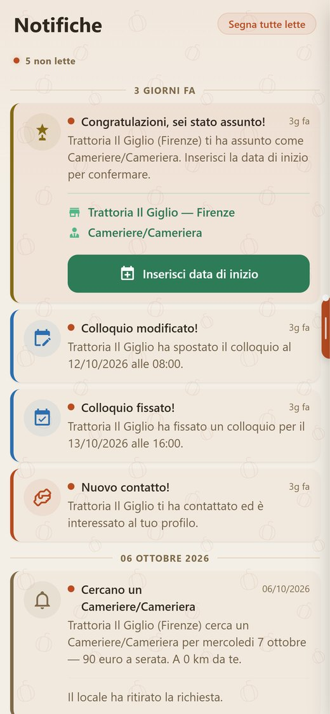
Oggi
Si aspetta una risposta che spesso non arriva.
Col tempo
Ogni candidatura ha un esito che si vede. Anche dai no si impara.
Ogni cambio arriva per iscritto.
Scambi di turno approvati o rifiutati, un turno tolto, una proposta di cambio ruolo. Arriva tutto nelle notifiche.
Anche la fine di una collaborazione resta scritta, e si vede nel curriculum.
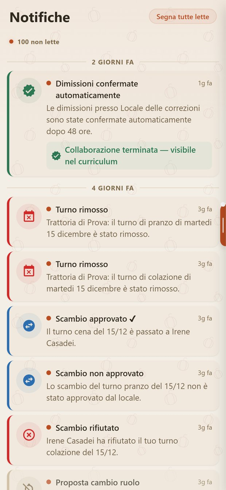
Oggi
Un turno cambiato con un vocale. Dopo una settimana nessuno se lo ricorda.
Col tempo
Si impara a lavorare con regole chiare, da tutte e due le parti.
Si parla col locale dentro l'app.
Le conversazioni con i locali stanno in un posto solo.
Chi disturba si blocca o si segnala con due tocchi.
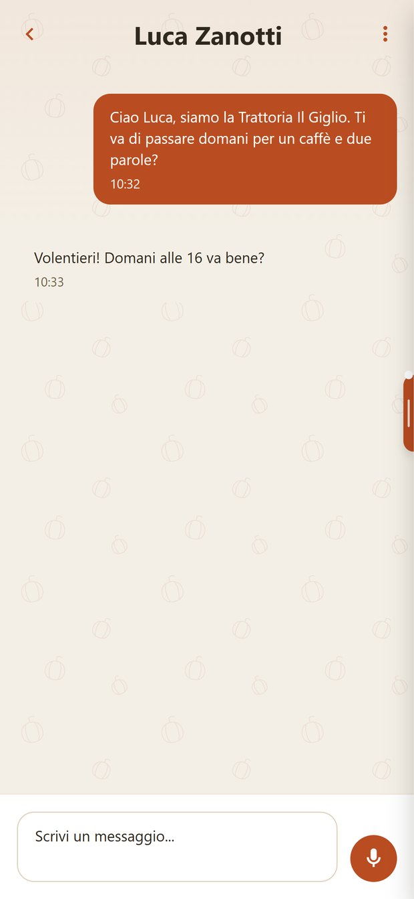
Oggi
Il numero personale di un ragazzo gira tra sconosciuti.
Col tempo
Il lavoro resta separato dalla vita privata. E resta scritto cosa ci si è detti.
I turni arrivano nel calendario.
La settimana con turni e impegni. I turni dati dal locale compaiono qui.
Si scambiano con un collega e si prendono quelli rimasti liberi.
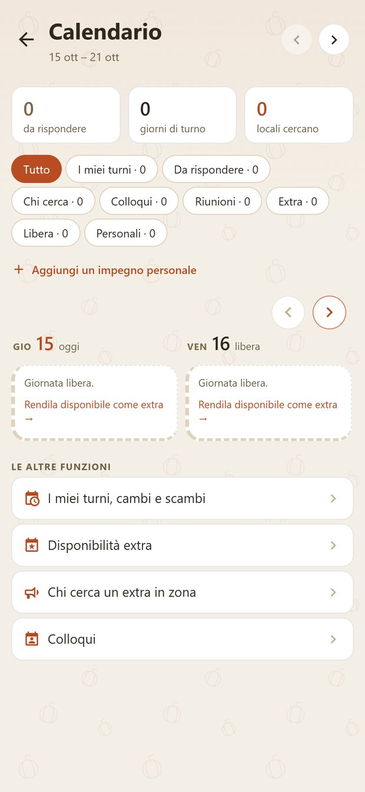
Oggi
Turni detti a voce o in un gruppo di chat, cambiati all'ultimo.
Col tempo
Si organizza la vita fuori dal lavoro, studio compreso.
I giorni liberi diventano lavoro.
Nel calendario ogni giornata libera ha il suo tasto: la si rende disponibile come extra. I locali della zona ingaggiano senza colloquio.
Gli extra svolti finiscono nel CV.
Oggi
L'extra passa dalle conoscenze. Chi non conosce nessuno resta fuori.
Col tempo
Weekend dopo weekend si fa esperienza in più locali, e ognuno resta scritto.
Data, ruolo, compenso. Per iscritto.
La proposta di un extra arriva completa. Si accetta con un tasto: "Lo prendo".
In "Cercano qualcuno" si vedono i locali vicini con un turno da coprire.
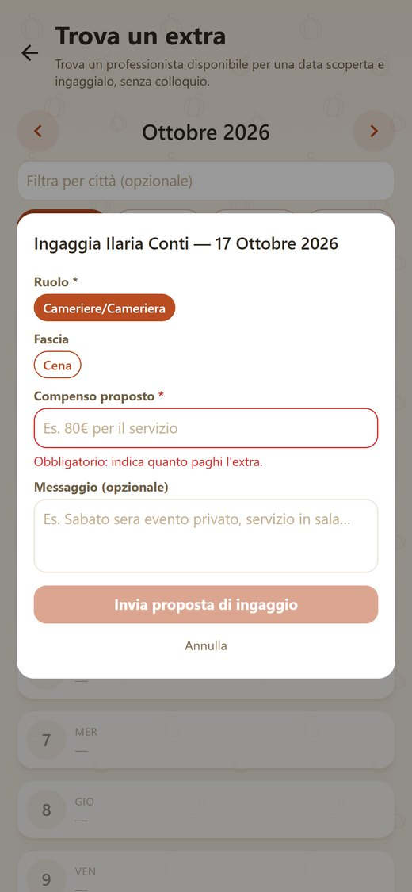
Oggi
Un messaggio la sera prima, senza la paga scritta.
Col tempo
Gli accordi sono chiari per tutti e due. Chi si presenta si fa un nome.
Le competenze si dimostrano.
Quiz a livelli sulle competenze. Chi li supera ottiene un sigillo che si vede sul profilo.
Il titolare attesta le competenze viste sul campo. Si caricano i certificati.
La tracciabilità regionale mostra in quali regioni sei stato verificato.
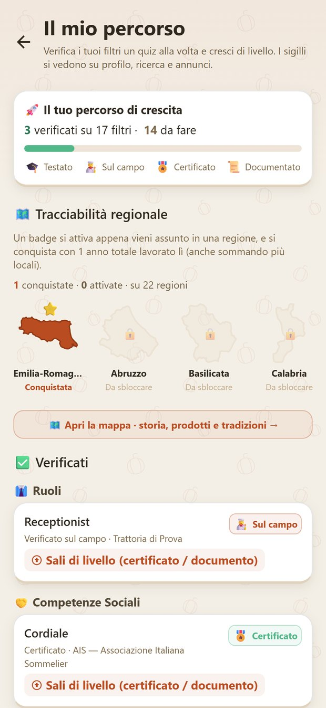
Oggi
Il diploma non dice cosa sai fare in sala o in cucina.
Col tempo
Una competenza alla volta, il profilo diventa una prova di quello che sai.
Le regioni dove lavori si accendono.
Una mappa dell'Italia. Ogni regione dove hai lavorato si colora.
Per ognuna: storia, prodotti tipici, tradizioni e traguardi.
Oggi
Chi fa la stagione in un'altra regione torna con un'esperienza che nessuno vede.
Col tempo
Il percorso diventa una mappa del mestiere. La cucina e la sala si imparano anche dai territori.
Prepararsi al colloquio.
Il Coach risponde a domande su colloqui, lettere di presentazione e carriera.
La prima domanda è gratis. Poi il Coach è a pagamento, con un abbonamento che si sceglie solo se serve.
Oggi
Al primo colloquio si arriva senza sapere cosa ti chiederanno.
Col tempo
Un ragazzo si prepara da solo, quando vuole, sul lavoro che cerca.
Cosa vede il titolare.
Il locale confronta i professionisti con un suo annuncio. Vede la percentuale, la zona, le esperienze verificate e le recensioni.
Dalla scheda contatta e fissa il colloquio.
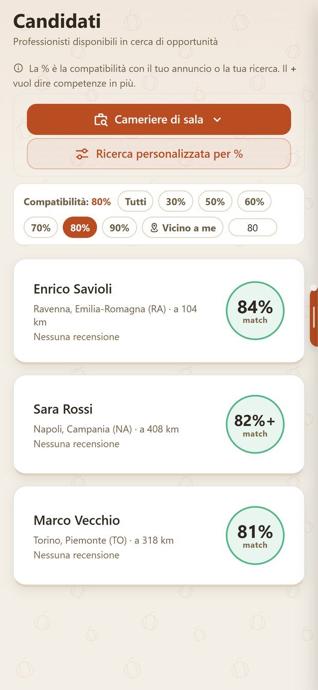
Oggi
Un titolare legge pile di curriculum tutti uguali.
Col tempo
Chi ha competenze verificate viene trovato, anche senza conoscenze.
Il turno scoperto si copre.
Il locale assegna i turni della settimana. Un buco va a chi è libero. Oppure diventa una richiesta di extra, col compenso, per i professionisti della zona.

Oggi
Il sabato sera scoperto e il giro di telefonate.
Col tempo
Chi è disponibile lavora di più. Il locale sa chi chiamare.
La squadra in una pagina.
Personale attivo, andamento del mese, copertura per area, affinità tra colleghi. Il titolare valuta e attesta le competenze sul campo.
Per i locali c'è anche un Consulente a pagamento.
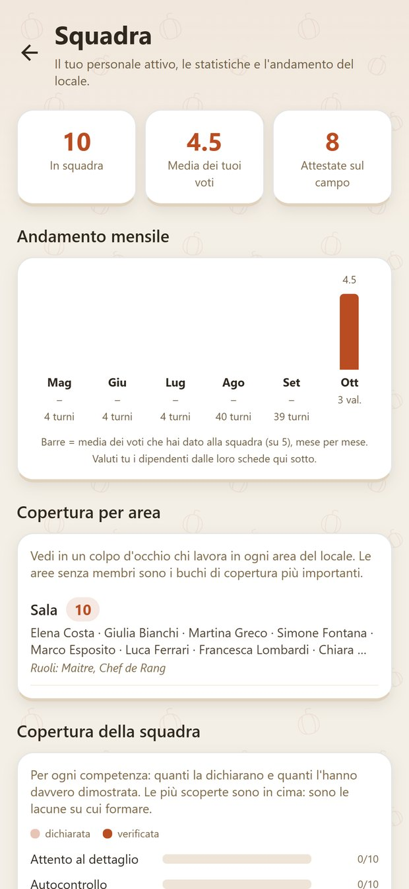
Oggi
Chi lavora bene non lascia traccia quando cambia locale.
Col tempo
Il lavoro fatto bene resta scritto e segue la persona.
Il voto e l'andamento.
Per ogni persona della squadra il titolare vede il voto medio, l'andamento mese per mese e i voti per area.
Si vede chi cresce e dove serve una mano.
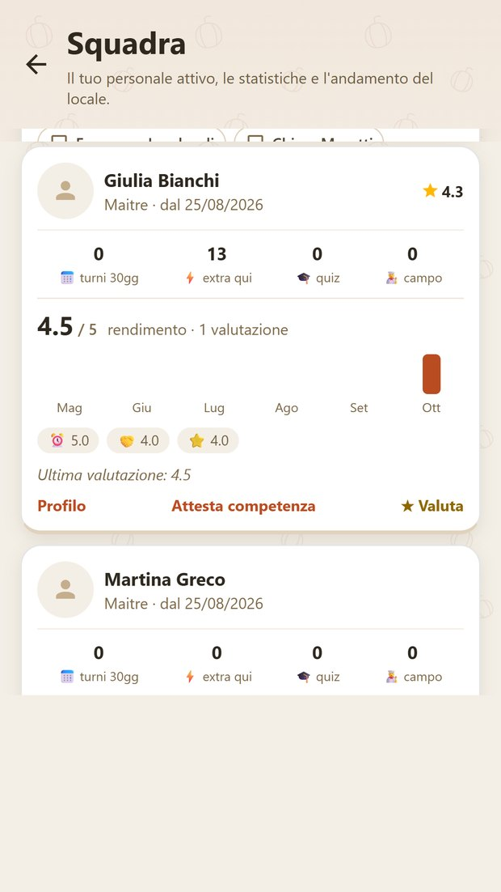
Oggi
Un ragazzo non sa come sta andando finché qualcuno non glielo dice.
Col tempo
Si vede dove si è forti e dove migliorare, mese per mese.
Si valuta su cose precise.
Puntualità, qualità del lavoro, spirito di squadra. Un voto per ognuna, più il voto d'insieme.
Dopo un lavoro ci si dà un voto, da tutte e due le parti.
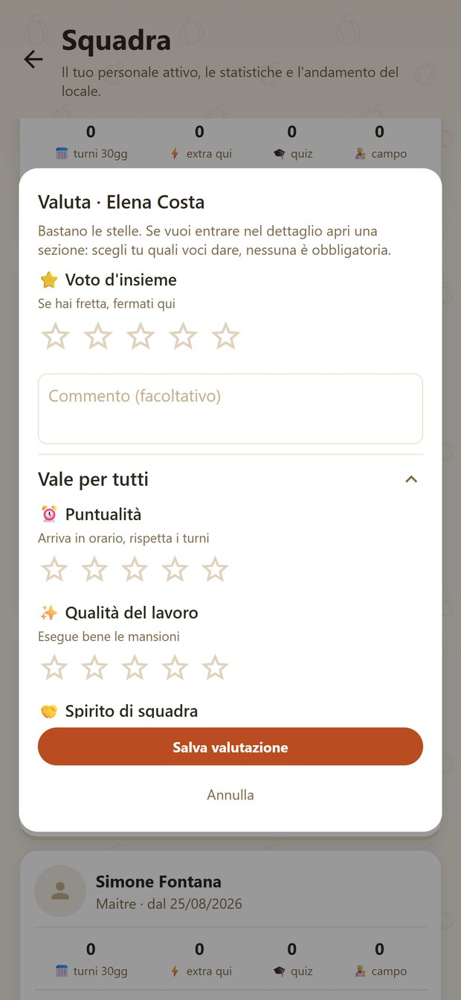
Oggi
Il giudizio su un ragazzo resta nella testa del titolare.
Col tempo
Il giudizio diventa scritto, punto per punto.
Il titolare affida dei compiti.
Il titolare sceglie una persona della squadra e le dà dei permessi: gestire gli annunci, selezionare i candidati.
Le responsabilità arrivano per iscritto.
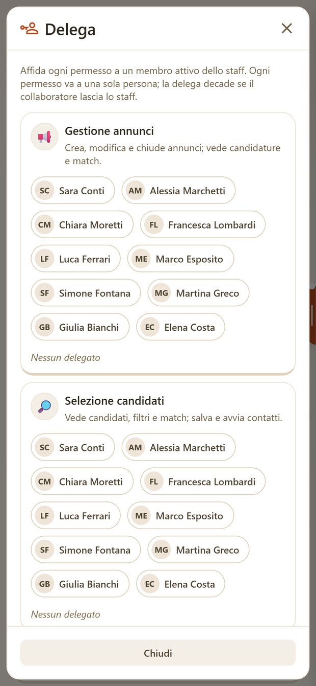
Oggi
La fiducia del titolare si dice a voce, e lì resta.
Col tempo
Chi cresce nel locale riceve responsabilità vere, con il suo nome sopra.
Briefing e riunioni in calendario.
Il locale fissa una riunione con data e ora. L'invito arriva nelle notifiche e si conferma con un tocco.
Si vede chi ha confermato.
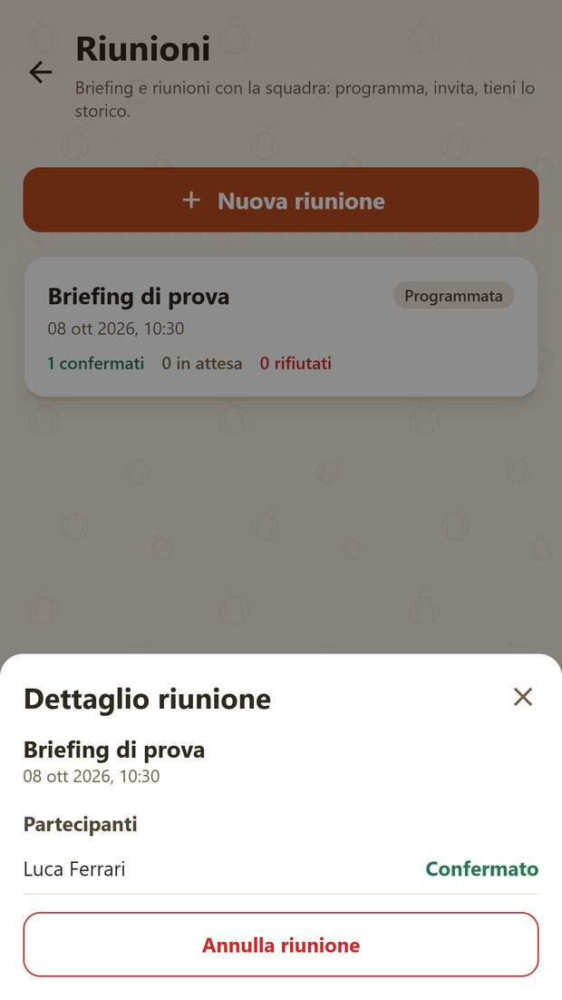
Oggi
La riunione si scopre all'ultimo, in un gruppo di chat.
Col tempo
Si arriva preparati. Chi conferma, c'è.
Cosa cambia usandola.
Entrano nel lavoro sapendo la paga prima. Il loro percorso resta scritto e si porta da un locale all'altro.
Trovano persone compatibili e coprono i turni con chi è libero vicino a loro.
Gli annunci con la paga scritta diventano la norma. Le competenze si vedono, oltre ai titoli.
Ha un modo concreto per parlare di lavoro in classe, con annunci veri della sua zona.
Per i ragazzi è gratis.
Per chi cerca lavoro l'app è gratuita. Gli extra si scelgono solo se servono.
Gratis
- Profilo e annunci
- Candidature e colloqui
- Messaggi e notifiche
- Calendario e turni
- Extra e proposte
- Il mio percorso
- La tua Italia
Solo se serve
- Import del CV da file
- Coach, dopo la prima domanda
- Profilo in cima alle ricerche
Per i locali pubblicare annunci, turni, squadra ed extra è gratuito.
Un incontro in classe, 30 minuti.
Online o in classe, con le quarte e le quinte. Lo tengo io.
- Cosa guardano i titolari.Cosa salta all'occhio in un profilo, e cosa lo fa scartare.
- Come si presenta un profilo.Esperienze di scuola comprese.
- Come si riconosce un annuncio poco serio.Paga assente, orari vaghi, richieste strane.
Mi scriva una riga e troviamo la data.
+39 351 717 3727 · WhatsApp
ristonext.com
App Store · Google Play
Seguiamo anche i locali con una consulenza su marketing, personale, operatività e organizzazione e, se serve, sui conti. Scriveteci per parlarne.